Problem Set #4
Modeling classroom activity #2
One dimensional diffusion models
Every one of these problems explores modeling using a conservation law, but each problem has a different twist. Since q, the CO2 content, is conserved, the flux is constant across any position x when the system is in a steady state configuration.1 Thus, for any of these problems, we must correctly determine an expression for the flux and extend this information into a full solution. As we discussed in class, we can only hope to find an equilibrium if plant absorbs as much CO2 as the astronaut produces. We shall call this quantity F0, and we shall use this quantity at flux boundary conditions as each end of the domain.

Find a steady state solution.
This particular problem is just like the example in class except that
that the CO2 is being blown across the domain. Thus, one can
hypothesize that there are two transport terms. One is diffusive
transport governed by the usual ``Fickian'' or ``Fourier Law'' term -k
qx.2
The other flux contribution would be due to the ventilation
system. One can consider each contribution separately, so to
understand the affect of the ventilation system, one can set k=0 to remove
diffusion from the problem. If the distribution at time t=0 is
q(x,0), the distribution at some later time would be
q(x,t) =
q(x-Ut,0). In other words, if one wanted to know q at any time,
one just looks upstream toward the fan. As usual, we can relate the
change in q in a control volume with the flux
as follows:
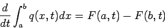 |
(1) |
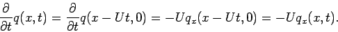
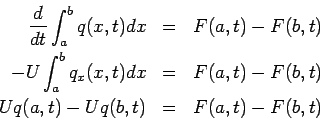
Thus, the dynamic system would be
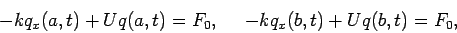
To find a steady state solution, q(x), we set qt =0 and solve
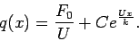
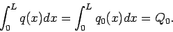
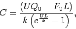
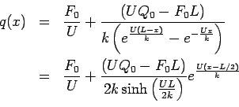
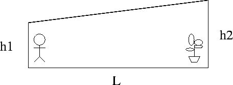
Find a steady state solution.
Here, the flux term is
-k h(x) qx as previously discussed. Thus,
we must solve
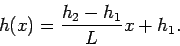
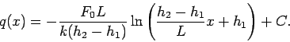
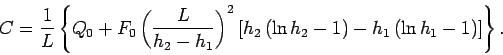
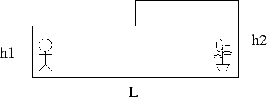
Find a steady state solution.
It is possible to approach this problem a number of ways including using a Heaviside step function or using a thin transition region from one hallway height to the other and letting the width of the transition go to zero. However, one of the most direct ways to attack this problem is to decompose this problem into two domains, and make each solution compatible with suitable boundary conditions at the new interior boundary at x=L/2.
Each domain is a problem just like the one we solved in class, and
the solution in each half of the hallway is linear. If we call the
solution on the left half, qL(x), and the solution on the right,
qR(x), we see that
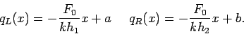
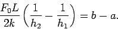
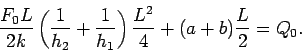
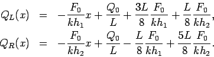
To conclude, I would like to end with a few comparisons. Let's
standardize the problem so that
Q0 = F0 = L = k = 1 and vary the
other parameters.
|
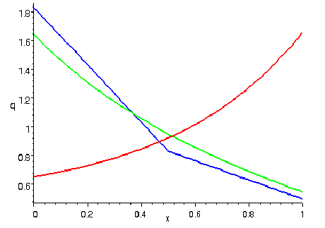 |
|
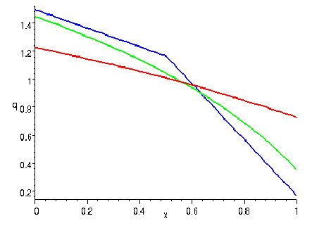 |